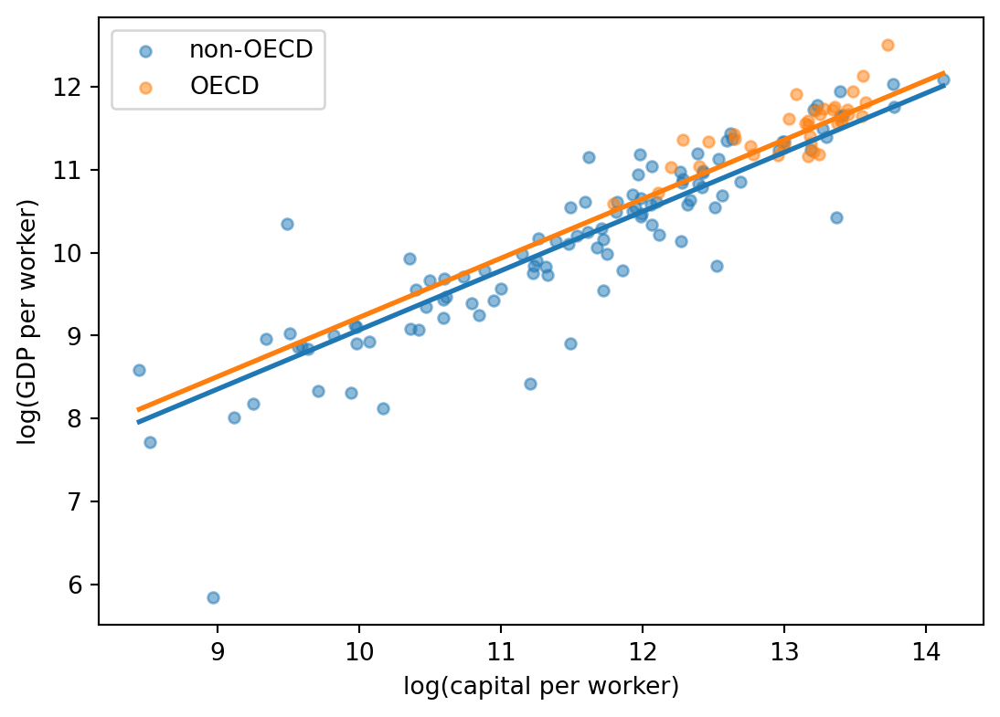
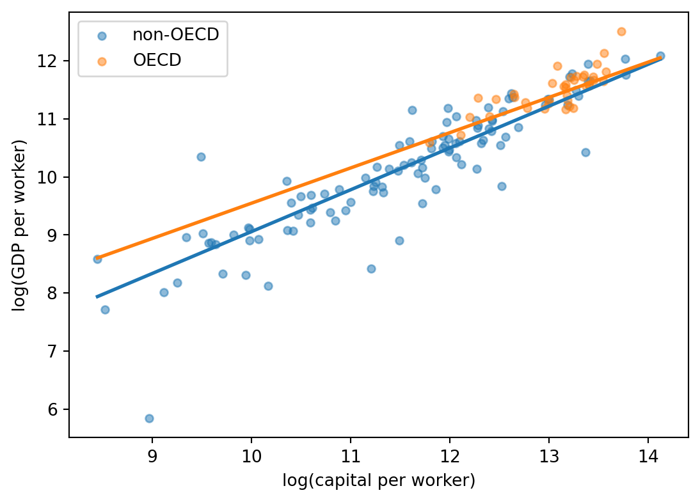

import statsmodels.formula.api as smf
# 1. モデルを定義する
model1 = smf.ols(
"np.log(gdp_per_worker) ~ np.log(capital_per_worker)",
data=df,
)
# 2. 推定する
m1 = model1.fit()
# 3. 結果を見る
print(m1.summary())第3回 重回帰分析の入口
1 この回のねらい
第2回の単回帰を、重回帰・対数変換・ダミー変数・交差項に拡張します。statsmodels に限らず、回帰モデル系のライブラリ（linearmodels、scikit-learn など）は 「モデル定義 → .fit() → 結果を見る」 の流れで使います。今回はこのパターンに慣れます。
- 単回帰から重回帰へ
- 対数変換した係数の読み方
- ダミー変数
- 交差項
- patsy の formula 記法
実行コードは scripts/session_03/02-multiple_regression.py に 穴埋め で置いてあります。VS Code で開き、____ を埋めながら順に実行してください。このノートには答えと解釈が載っています。詰まったらここを見てください。
2 使うデータ
第2回と同じ PWT 11.0 の 2023 年クロスセクションに、OECD 加盟国かどうかを示すダミー変数 is_oecd を追加して使います。
スクリプトの取得
cd ~/repos/my-thesis-project
gh repo clone kjst-edu/thesis-data-lab _tdl -- --depth 1 && cp -r _tdl/scripts/session_03 scripts/ && rm -rf _tdl
code .cd ~/repos/my-thesis-project
gh repo clone kjst-edu/thesis-data-lab _tdl -- --depth 1; Copy-Item _tdl\scripts\session_03 scripts\session_03 -Recurse -Force; Remove-Item _tdl -Recurse -Force
code .加工データの作成
scripts/session_03/01-prepare_pwt_2023_oecd.py は、第2回の加工スクリプトに OECD 加盟国 ISO コードのリストを足し、is_oecd 列（0/1 の整数）を追加します。
uv run scripts/session_03/01-prepare_pwt_2023_oecd.pydata/pwt_2023_oecd.csv ができます。
VS Code Chat にコードの説明を頼む
02-multiple_regression.py を開いた状態で、説明してほしい範囲を選択し、VS Code のチャットパネルで次のように頼むと説明が返ってきます。
選択した部分が何をしているか、Python 初学者向けに行ごとに説明してください。
GitHub Copilot Chat なら、/explain のスラッシュコマンドでも同じことができます。
穴埋め (____) の答えそのものを直接聞かないようにしてください。詰まったら、まずこのノートを、最後の手段として完成版 demo/scripts/session_03/ を見てください。
3 [1] 単回帰の復習
statsmodels では smf.ols(...) の第1引数に formula を文字列で渡します。文字列と回帰式の対応:
| formula | 回帰式 |
|---|---|
y ~ x |
\(y = \alpha + \beta x + \varepsilon\) |
np.log(y) ~ x |
\(\log y = \alpha + \beta x + \varepsilon\) |
y ~ np.log(x) |
\(y = \alpha + \beta \log x + \varepsilon\) |
np.log(y) ~ np.log(x) |
\(\log y = \alpha + \beta \log x + \varepsilon\) |
y ~ x と書けば線形、np.log(y) などを挟めば log 変換が同時に適用されます。第2回と同じ log-log の単回帰を、モデル定義 → .fit() → .summary() の3段に分けて書きます。
np.log(capital_per_worker) の係数 (coef) が、資本に関する産出弾力性に対応します。
| Dep. Variable: | np.log(gdp_per_worker) | R-squared: | 0.850 |
|---|---|---|---|
| Model: | OLS | Adj. R-squared: | 0.849 |
| Method: | Least Squares | F-statistic: | 804.7 |
| Date: | Fri, 08 May 2026 | Prob (F-statistic): | 2.29e-60 |
| Time: | 16:14:23 | Log-Likelihood: | -83.647 |
| No. Observations: | 144 | AIC: | 171.3 |
| Df Residuals: | 142 | BIC: | 177.2 |
| Df Model: | 1 | ||
| Covariance Type: | nonrobust |
| coef | std err | t | P>|t| | [0.025 | 0.975] | |
|---|---|---|---|---|---|---|
| Intercept | 0.9691 | 0.337 | 2.875 | 0.005 | 0.303 | 1.636 |
| np.log(capital_per_worker) | 0.7977 | 0.028 | 28.368 | 0.000 | 0.742 | 0.853 |
| Omnibus: | 53.977 | Durbin-Watson: | 2.022 |
|---|---|---|---|
| Prob(Omnibus): | 0.000 | Jarque-Bera (JB): | 361.817 |
| Skew: | -1.108 | Prob(JB): | 2.71e-79 |
| Kurtosis: | 10.443 | Cond. No. | 112. |
Notes:
[1] Standard Errors assume that the covariance matrix of the errors is correctly specified.
ヒント
1, 2, 3 の手順は、linearmodels（パネル・操作変数）でも scikit-learn（機械学習）でも基本的に同じです。（以下のコードは実行できない）
# linearmodels の例
model = PanelOLS.from_formula("y ~ 1 + x + EntityEffects", data=df)
result = model.fit()
print(result.summary)
# scikit-learn の例
model = LinearRegression()
model.fit(X, y)
print(model.coef_, model.intercept_)4 [2] 重回帰: 人的資本を加える
人的資本指数 hc を加えます。
\[ \log(y/L) = \alpha + \beta_1 \log(K/L) + \beta_2 \log(\mathrm{hc}) + \varepsilon \]
違うのは formula の右辺に項が増えることだけです。
model2 = smf.ols(
"np.log(gdp_per_worker) ~ np.log(capital_per_worker) + np.log(hc)",
data=df,
)
m2 = model2.fit()
print(m2.summary()) OLS Regression Results
==================================================================================
Dep. Variable: np.log(gdp_per_worker) R-squared: 0.854
Model: OLS Adj. R-squared: 0.852
Method: Least Squares F-statistic: 412.8
Date: Fri, 08 May 2026 Prob (F-statistic): 1.14e-59
Time: 16:14:23 Log-Likelihood: -81.637
No. Observations: 144 AIC: 169.3
Df Residuals: 141 BIC: 178.2
Df Model: 2
Covariance Type: nonrobust
==============================================================================================
coef std err t P>|t| [0.025 0.975]
----------------------------------------------------------------------------------------------
Intercept 1.3805 0.392 3.521 0.001 0.605 2.156
np.log(capital_per_worker) 0.7283 0.045 16.360 0.000 0.640 0.816
np.log(hc) 0.4207 0.211 1.998 0.048 0.004 0.837
==============================================================================
Omnibus: 74.764 Durbin-Watson: 1.966
Prob(Omnibus): 0.000 Jarque-Bera (JB): 650.221
Skew: -1.590 Prob(JB): 6.40e-142
Kurtosis: 12.913 Cond. No. 139.
==============================================================================
Notes:
[1] Standard Errors assume that the covariance matrix of the errors is correctly specified.重回帰の係数は 「他の変数を一定としたときの効果」 として読みます。hc を入れたことで log(K/L) の係数の意味（条件づけ）が変わるので、単回帰のときから値も動きます。
5 対数変換した係数の読み方
| モデル | \(x\) の係数 \(\beta\) の解釈 |
|---|---|
| \(y = \alpha + \beta x\) | \(x\) が1単位増えると \(y\) は \(\beta\) 単位変わる |
| \(\log y = \alpha + \beta x\) | \(x\) が1単位増えると \(y\) は \(100\beta\) % 変わる（半弾力性） |
| \(\log y = \alpha + \beta \log x\) | \(x\) が 1 % 増えると \(y\) は \(\beta\) % 変わる（弾力性） |
| \(y = \alpha + \beta \log x\) | \(x\) が 1 % 増えると \(y\) は \(\beta/100\) 単位変わる |
| \(\log y = \alpha + \beta D\)（D は 0/1 ダミー） | \(D=1\) のとき \(y\) は近似で \(100\beta\) % 高い |
ダミーの効果を厳密に出したいときは \(\exp(\beta) - 1\) を使うと近似誤差を避けられます。
6 [3] ダミー変数: OECD 加盟国かどうか
is_oecd は 0/1 の整数列なので、そのまま投入できます。
\[ \log(y/L) = \alpha + \beta_1 \log(K/L) + \beta_2 \log(\mathrm{hc}) + \gamma \cdot \mathrm{is\_oecd} + \varepsilon \]
model3 = smf.ols(
"np.log(gdp_per_worker) ~ np.log(capital_per_worker) + np.log(hc) + is_oecd",
data=df,
)
m3 = model3.fit()
print(m3.summary()) OLS Regression Results
==================================================================================
Dep. Variable: np.log(gdp_per_worker) R-squared: 0.857
Model: OLS Adj. R-squared: 0.854
Method: Least Squares F-statistic: 278.7
Date: Fri, 08 May 2026 Prob (F-statistic): 8.02e-59
Time: 16:14:23 Log-Likelihood: -80.417
No. Observations: 144 AIC: 168.8
Df Residuals: 140 BIC: 180.7
Df Model: 3
Covariance Type: nonrobust
==============================================================================================
coef std err t P>|t| [0.025 0.975]
----------------------------------------------------------------------------------------------
Intercept 1.5970 0.414 3.853 0.000 0.778 2.416
np.log(capital_per_worker) 0.7124 0.045 15.669 0.000 0.623 0.802
np.log(hc) 0.3528 0.214 1.648 0.102 -0.070 0.776
is_oecd 0.1507 0.097 1.546 0.124 -0.042 0.343
==============================================================================
Omnibus: 74.638 Durbin-Watson: 1.986
Prob(Omnibus): 0.000 Jarque-Bera (JB): 672.861
Skew: -1.571 Prob(JB): 7.76e-147
Kurtosis: 13.113 Cond. No. 145.
==============================================================================
Notes:
[1] Standard Errors assume that the covariance matrix of the errors is correctly specified.is_oecd の係数 \(\gamma\) は「他の変数を一定としたときの、OECD と非 OECD の \(\log(y/L)\) の差」。被説明変数が log なので、\(100 \cdot \gamma\) % のシフトとして読めます（表 2）。

log(hc) をサンプル平均で固定したときの予測線。
警告ダミー変数の罠
すべての水準を 0/1 列として入れると intercept と完全共線になり推定できません。\(k\) 水準なら \(k-1\) 個入れます。後で出てくる C(...) を使えば自動で1水準を落としてくれます。
7 [4] 交差項: グループで効果は違うか
「OECD では資本の生産弾力性そのものが違うのではないか」を試します。
\[ \log(y/L) = \alpha + \beta_1 \log(K/L) + \beta_2 \log(\mathrm{hc}) + \gamma \cdot \mathrm{is\_oecd} + \delta \cdot \log(K/L) \times \mathrm{is\_oecd} + \varepsilon \]
statsmodels では A * B と書くと A + B + A:B に展開されます（単独項を残し忘れないための省略記法）。
model4 = smf.ols(
"np.log(gdp_per_worker) ~ np.log(capital_per_worker) * is_oecd + np.log(hc)",
data=df,
)
m4 = model4.fit()
print(m4.summary()) OLS Regression Results
==================================================================================
Dep. Variable: np.log(gdp_per_worker) R-squared: 0.857
Model: OLS Adj. R-squared: 0.853
Method: Least Squares F-statistic: 208.4
Date: Fri, 08 May 2026 Prob (F-statistic): 1.14e-57
Time: 16:14:23 Log-Likelihood: -80.161
No. Observations: 144 AIC: 170.3
Df Residuals: 139 BIC: 185.2
Df Model: 4
Covariance Type: nonrobust
======================================================================================================
coef std err t P>|t| [0.025 0.975]
------------------------------------------------------------------------------------------------------
Intercept 1.5309 0.426 3.596 0.000 0.689 2.373
np.log(capital_per_worker) 0.7191 0.047 15.456 0.000 0.627 0.811
is_oecd 1.6153 2.083 0.776 0.439 -2.503 5.733
np.log(capital_per_worker):is_oecd -0.1127 0.160 -0.704 0.483 -0.429 0.204
np.log(hc) 0.3411 0.215 1.585 0.115 -0.084 0.766
==============================================================================
Omnibus: 73.225 Durbin-Watson: 1.976
Prob(Omnibus): 0.000 Jarque-Bera (JB): 658.356
Skew: -1.532 Prob(JB): 1.10e-143
Kurtosis: 13.017 Cond. No. 746.
==============================================================================
Notes:
[1] Standard Errors assume that the covariance matrix of the errors is correctly specified.| 係数 | 意味 |
|---|---|
np.log(capital_per_worker) |
非 OECD での資本の生産弾力性 |
is_oecd |
\(\log(K/L) = 0\) のときの OECD と非 OECD の差（解釈は薄い） |
np.log(capital_per_worker):is_oecd |
OECD − 非 OECD の弾力性の差 |
OECD と非 OECD の弾力性そのものを見比べるには、係数を足し合わせます。
beta_non = m4.params["np.log(capital_per_worker)"]
delta = m4.params["np.log(capital_per_worker):is_oecd"]
print(f"非 OECD での資本弾力性 : {beta_non:.3f}")
print(f"OECD での資本弾力性 : {beta_non + delta:.3f}")非 OECD での資本弾力性 : 0.719
OECD での資本弾力性 : 0.606
log(hc) をサンプル平均で固定したときの予測線。
8 patsy の formula 記法
statsmodels の formula は内部で patsy が解釈しています。卒論で頻出する記法をまとめます。
| 記法 | 展開・意味 |
|---|---|
y ~ x1 + x2 |
加法的に並べる |
y ~ x1 - 1 |
intercept を外す |
y ~ x1:x2 |
交差項のみ（単独項なし。意味が変わるので注意） |
y ~ x1*x2 |
x1 + x2 + x1:x2 の省略形 |
y ~ C(g) |
カテゴリ列 g をダミー化（最初の水準が参照群） |
y ~ C(g, Treatment(reference="...")) |
参照群を指定 |
y ~ np.log(x) |
任意の関数を式の中で適用できる |
y ~ I(x**2) |
計算式を式の中で書く（I() で囲んで保護） |
C(g) の例（地域ダミー）:
smf.ols(
"np.log(gdp_per_worker) ~ np.log(capital_per_worker) + C(region)",
data=df,
)I() の例（多項式項）:
smf.ols(
"np.log(gdp_per_worker) ~ np.log(capital_per_worker) + I(np.log(capital_per_worker)**2)",
data=df,
)
ヒント
複雑な変換を式の中に書きすぎると formula が長く読みにくくなります。式が膨らんできたら、変換した列を df にあらかじめ作っておくほうが見通しがよくなります。
9 [5] モデル比較
説明変数を増やせば \(R^2\) は必ず上がるので、当てはまりは Adjusted \(R^2\) で見ます。
pd.DataFrame({
"model": ["単回帰", "重回帰", "+ ダミー", "+ 交差項"],
"n": [int(m.nobs) for m in (m1, m2, m3, m4)],
"R^2": [m.rsquared for m in (m1, m2, m3, m4)],
"Adj.R^2": [m.rsquared_adj for m in (m1, m2, m3, m4)],
}).round(3)| model | n | R^2 | Adj.R^2 | |
|---|---|---|---|---|
| 0 | 単回帰 | 144 | 0.850 | 0.849 |
| 1 | 重回帰 | 144 | 0.854 | 0.852 |
| 2 | + ダミー | 144 | 0.857 | 0.854 |
| 3 | + 交差項 | 144 | 0.857 | 0.853 |
重要モデルは結果を見てから選ばない
複数のモデルを並べたとき、「Adjusted \(R^2\) が一番大きいものを採用」「自分のストーリーに合うものを採用」といった事後的な選び方は、経済分析では適切でないことが多い。理論や先行研究で primary specification を先に決め、それ以外は sensitivity check として並べるのが原則。
\(R^2\) や p 値・有意性だけで機械的に判断せず、係数の符号と大きさが事前の見立てと整合するか、整合しないとき何が起きていそうかを毎回議論する。
10 自習に回すこと
- 多重共線性の診断（VIF:
statsmodels.stats.outliers_influence.variance_inflation_factor） - ロバスト標準誤差:
.fit(cov_type="HC3")など - 回帰表をまとめて出す:
statsmodels.iolib.summary2.summary_col
11 対応する実行例
scripts/session_03/01-prepare_pwt_2023_oecd.py— OECD ダミー付きの 2023 年クロスセクションをdata/pwt_2023_oecd.csvに保存scripts/session_03/02-multiple_regression.py— 重回帰・ダミー・交差項（穴埋め）
完成版の参考は demo/scripts/session_03/ にあります。